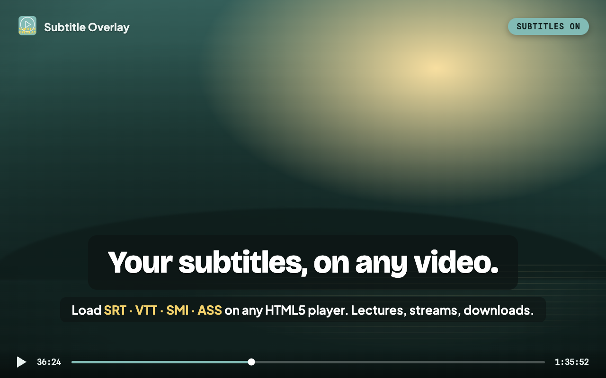
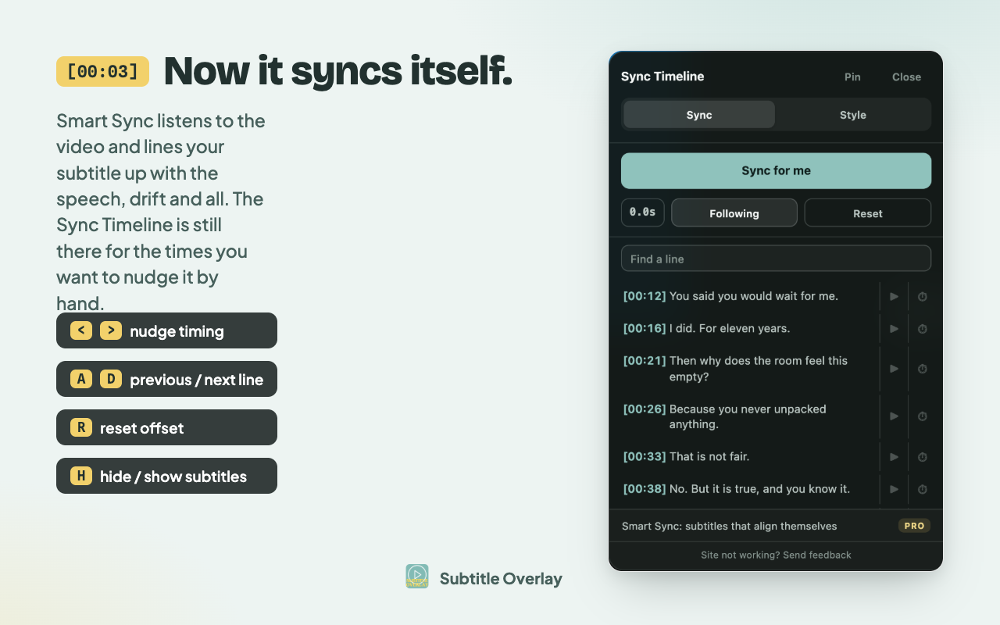

You found a subtitle file for something that has no captions in your language. It loads twenty seconds off, you nudge it into place, and three minutes later it has drifted again. Subtitle Overlay exists for that.

What it does
Any player, any file
Drop an SRT, VTT, SMI or ASS file onto the page, or search OpenSubtitles without leaving the video. Encoding is detected automatically, so Japanese, Chinese and Korean files are not mangled.
Readable on real footage
Font, size, colour, outline, background blur and position, all adjustable while the video plays, in fullscreen too. Text scales with the screen, so one setting works in a small window and in 4K.
Timing you control
The Sync Timeline lists every line. Jump to a scene, or snap a line to the current playback time. Keyboard shortcuts nudge the offset without opening anything.
It remembers
Come back to a video and its subtitle and sync return in one click. Stored on your device, keyed by a one-way hash, never uploaded.
Smart Sync
Pro listens to a stretch of the video's audio, works out where speech actually happens, and matches that rhythm against the timings in your file. It corrects a fixed offset and progressive drift together, which is what a 25 fps subtitle on 24 fps video needs.
It does not read the words, so the languages do not have to match: an English subtitle file on a Korean film is the same problem to it. The speech model runs on your own machine, and the audio is never uploaded, saved, or included in analytics.

What leaves your machine
Almost nothing, and it is worth being specific about which parts.
- Never sent: subtitle text, video, audio, screenshots, full page URLs.
- Sent when you search: your query, to OpenSubtitles, so it can return files.
- Optional: anonymous usage analytics, which you can switch off in Settings.
The full privacy policy spells out every case.
Subtitle Overlay Pro
Smart Sync ships today as a beta. Auto Captions, AI Translate, a larger subtitle library, A–B repeat and a click-to-translate dictionary are still in the build, and a founding licence covers every one of them as it lands.
$34.99 once, yours for life
Planned $3.99/mo after launch. Founding seats are limited to 50.
Questions
- Does it work on any video?
- Anywhere the page uses an HTML5 video element, which covers most streaming sites, lecture platforms, and local files opened in the browser.
- What formats can I load?
- SRT, VTT, SMI and ASS.
- Do the subtitle and the audio have to be the same language?
- No. Smart Sync matches the rhythm of speech, not the words.
- Is any of it uploaded?
- No subtitle text, no video and no audio ever leaves the device.
- Is it free?
- Everything above is free. Pro adds Smart Sync.